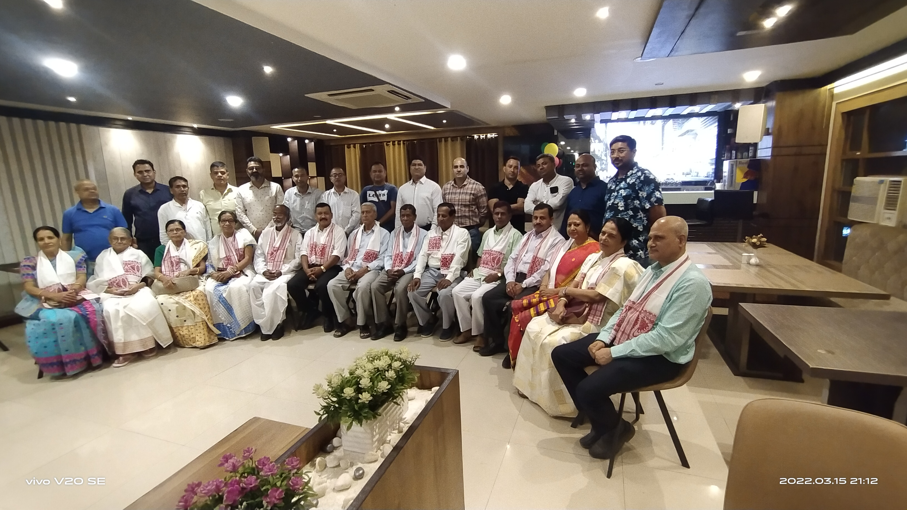

Alumni in the lime light
The association highlights the contributions of prominent alumni to a wider audience.

Cotton Collegiate Govt. H.S. School
Historical and contemporary alumni accomplishments are recorded here so members can keep the association informed and connected.
The association highlights the contributions of prominent alumni to a wider audience.
Members can share verified data profiles and media records to enrich the institutional record.
The directory is being built as a unified database to keep global alumni connected.
Chapters in metropolitan cities build local membership and coordinate activities.
The alumni achievers page is designed as a living record of success stories across civil service, medicine, engineering, and other fields, with room for members to submit verified updates.